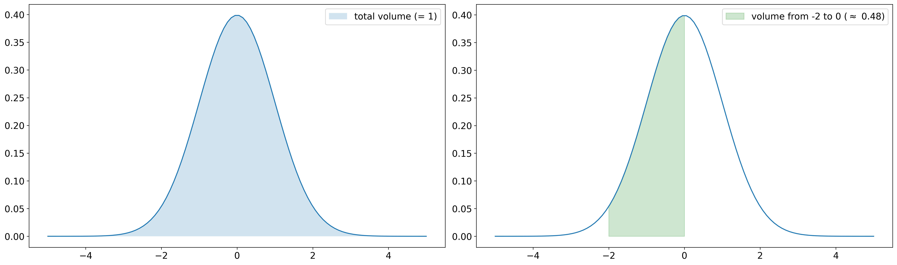

1. Fundamentals of Probability Theory¶
In the present section, we define the basic terms of probability theory and statistics. Moreover, we state the most common examples of discrete and continuous probability distributions.
The content follows the textbooks
“Statistik für Ingenieure - Wahrscheinlichkeitsrechnung und Datenauswertung endlich verständlich”
by Aeneas Rooch [Roo14] and
by Erhard Cramer and Udo Kamps [CK17].
The goal is to avoid unnecessarily complex mathematical backround, but to provide the required framework to understand the subsequent machine learning methods. Nevertheless, for the the sake of completeness, additional references are given from time to time. A more profound mathematical theory can for example be found in “Wahrscheinlichkeitstheorie” by Achim Klenke [Kle13].
Note
All three books are available free of charge via DigiBib.
1.1. Probability Spaces¶
Definition
In order to model the outcome of a random experiment, we denote by \(\Omega\) the sample space of all possible outcomes, i.e.,
Accordingly, each element \(\omega \in \Omega\) is called an outcome. A subset \(A\) of \(\Omega\) of possible outcomes is called an event. If \(A\) contains only a single outcome \(\omega\), i.e., \(A=\{\omega\}\) for some \(\omega \in \Omega\), \(A\) is also called an elementary event.
If we model the rolling of an ordinary cubic dice, the sample space
is given by the 6 possible outcomes. The event \(A\) of rolling an even number is given by \(A = \{2, 4, 6\} \subset \Omega\) and the elementary event of rolling a six is given by \(A=\{6\}\).
1.1.1. Discrete Probability Spaces¶
Definition
Let \(\Omega\) be a finite or countable sample space and denote by \(\mathcal{P}(\Omega) = \{A~|~A \subset \Omega\}\) the set of all subsets of \(\Omega\) (the so-called power set). Moreover, let \(p: \Omega \rightarrow [0, 1]\) be a map such that \(\sum_{\omega \in \Omega} p(\omega) = 1\). Then, the map \(P: \mathcal{P}(\Omega) \rightarrow [0,1]\) given by
is called a discrete probability measure or a discrete probability distribution. The triple \((\Omega, \mathcal{P}(\Omega), P)\) or briefly \((\Omega, P)\) is called a discrete probability space.
A probability measure \(P\) assigns to each possible event a probability between 0 (“impossible”) to 1 (“sure”).
\(P\) is completely characterized by the elementary probabilities (i.e., the probabilities of elementary events specified by \(p\)) in the case of discrete probability distributions (by definition).
The condition \(\sum_{\omega \in \Omega} p(\omega) = 1\) guarantees that \(P(\Omega) = 1\). In other words, it has to be sure that the outcome of a random experiment is indeed in \(\Omega\) and moreover, \(P(\Omega) > 1\) would make no sense in terms of probabilities.
Assumed that we are dealing with a fair dice as before, it is reasonable to define \(p(\omega):=\frac{1}{6}\) for each \(\omega=1, \dots,6\). Hence, each outcome of a dice roll is each likely. Consequently, the probability of rolling an even number is
as expected.
Corollary
A discrete probability measure has the following properties:
\(0 \le P(A) \le 1\) for each event \(A \in \mathcal{P}(\Omega)\),
\(P(\Omega) = 1\),
\(P\) is \(\sigma\)-additive, i.e., for pairwise disjoint events \(A_i\), \(i \in \mathbb{N}\), it holds
The statements in the preceding corollary are also called Kolmogorov axioms.
The term “pairwise disjoint” means that two arbitrary events do not have any common elements. For example, the events \(\{2, 4, 6\}\) and \(\{1, 3\}\) are disjoint, but the events \(\{2, 4, 6\}\) and \(\{2, 3\}\) are not, since the share the outcome \(2\).
The last statement also holds true for a finite number of sets \(A_i\), \(i=1,\dots,n\), by simply choosingchoosing \(A_i = \emptyset\) (empty set) for \(i > n\). If we consider only two disjoint sets \(A_1\) and \(A_2\), it follows that \(P(A_1 \cup A_2) = P(A_1) + P(A_2)\). This means that the probability that the event \(A_1\) or the event \(A_2\) occurs equals the sum of the probabilities, which is intuitive.
1.1.2. Continuous Probability Spaces¶
It turns out that the definition of probability spaces requires a different approach in the case of sample spaces that contain uncountably many outcomes. For example, the sample space could be given by the real numbers (\(\Omega = \mathbb{R}\)) or a higher dimensional space (e.g. \(\Omega = \mathbb{R}^d\), \(d >= 2\)). Indeed, the definition of (probability) measures on arbitrary sample spaces turns out to be a complex mathematical problem which is the foundation of measure theory. This theory introduces so-called \(\sigma\)-algebras which specify the measurable events, i.e., the events for which it is possible to assign a probability without generating any inconsistencies. An introduction can be found in the first chapter of “Wahrscheinlichkeitstheorie” by Achim Klenke. Measure theory is the foundation of very powerful results, since it enables mathematicians to define probability measures even on infinite dimensional sample spaces such as spaces of functions which lead to so-called stochastic processes. A special case are Gaussian processes which turn out to be very useful in the context of machine learning and are an essential part of this lecture.
Luckily, we do not necessarily need to consider measure theory in detail for our purposes. For the mentioned cases (\(\mathbb{\Omega} = [0, 1]\) or \(\Omega = \mathbb{R}^d\), \(d >= 1\)), we can use ordinary integrals in order to define probabilities at least on “nice” events:
Set \(C := \big\{ [a_1, b_1] \times [a_2, b_2] \times \cdots \times [a_d, b_d]~\big|~-\infty \le a_i \le b_i \le \infty, ~i = 1, \dots, d\big\}\). An event \(A \in C\) is simply a box.
For d=1 we obtain an interval \(A = [a_1, b_1]\).
For d=2 we get a rectangle \(A = [a_1, b_1] \times [a_2, b_2] \subset \mathbb{R}^2\).
In measury theory, \(C\) is a so-called generating system of the Borel \(\sigma\)-algebra \(\mathcal{B}(\mathbb{R}^d)\).
The Borel \(\sigma\)-algebra is the smallest collection of events with sufficiently nice properties which contains alle these boxes.
\(\mathcal{B}(\mathbb{R}^d)\) is fairly abstract. Just rembember that
\(\mathcal{B}(\mathbb{R}^d)\) contains all events we would like / are able to assign a probability to,
there are subsets of \(\mathbb{R}^d\) which are not in \(\mathcal{B}(\mathbb{R}^d)\), but we do not care, since they are not important.
Definition
Let \(\Omega = \mathbb{R}^d\), \(d \ge 1\), be the sample space and \(f: \mathbb{R}^d \rightarrow \mathbb{R}\) be an integrable non-negative function such that
Then, the map \(P: C \rightarrow [0, 1]\) defined by
extends uniquely to \(\mathcal{B}(\Omega)\) (not part of the lecture) and this extension is called a continuous probability measure or a continuous probability distribution. \(f\) is called the probability density function (PDF) of \(P\) or briefly probabilty density or simply density. The triple \((\Omega, \mathcal{B}(\Omega), P)\) or briefly \((\Omega, P)\) is called a continuous probability space.
It holds
Therefore, \(f: \mathbb{R} \rightarrow \mathbb{R}\) defined by \(f(x):= \frac{1}{\sqrt{2 \pi}}~\exp\big(-\frac{1}{2} x^2\big)\) for \(x \in \mathbb{R}\) defines a continuous probability distribution with density \(f\). This distribution is the standard normal distribution (also denoted by \(\mathcal{N}(0, 1)\)).
As in the case of discrete probability spaces, a continuous probability measure fulfills the Kolmogorov axioms.
In order to unify the notation of discrete and continuous probability spaces, we denote a general probability space by \((\Omega, \mathcal{F}, P)\), where \(\mathcal{F}\) denotes a \(\sigma\)-algebra (in our case either \(\mathcal{P}(\Omega)\) or \(\mathcal{B}(\Omega)\)).
Keep in mind that \(f\) is simply a non-negative function whose volume under the graph is exactly one and the probability of some event \(A\) is the volume under the graph of \(f\) restricted to \(A\). In the plot below, \(P([-2, 0]) \approx 0.48\) is illustrated for a standard normal distribution. In other words, the probability to observe an outcome between -2 and 0 in a standard normally distributed experiment is approximately 48%.

1.2. Random Variables¶
Imagine that we perform multiple independent random experiments by rolling repeatedly (\(n\)-times) a fair dice. The corresponding sample space is given by
Since the experiments are independent and we consider a fair dice, it is reasonable to define
which results in a discrete probability space \((\Omega, \mathcal{P}(\Omega), P)\). Eventually, we are not interested in events with respect to \(\Omega\), but for example in the average outcome of the experiments or the number of times of rolling a six. Instead of modelling these experiments directly by redefining \(\Omega\) and \(p\), it is very useful to apply the concept of random variables:
Definition
Let \((\Omega, \mathcal{F}, P)\) be a probabiliy space. A map \(X: \Omega \rightarrow \mathbb{R}^d\), \(d \ge 1\), is called a real-valued random variable, if
for each \(A \in \mathcal{B}(\mathbb{R}^d)\) and the probability measure \(P_X: \mathcal{B}(\Omega) \rightarrow [0, 1]\) given by
is called the distribution of \(X\) under \(P\). If \(P_X\) admits a probability density, then we denote the density by \(f_X\). Furthermore, the cumulative distribution function of \(P_X\) is denoted by \(F_X\).
In order to model a fair dice as a random variable simply set \(\Omega= \{1, 2, 3, 4, 5, 6\}\) as well as \(p(\omega) = \frac{1}{6}\) for \(\omega \in \Omega\) to obtain the discrete probability space \((\Omega, P)\) and define \(X\) by
Observe that \(X\) does only take values in \(\{1, 2, 3, 4, 5, 6\}\). Hence, \(X\) maps to \(\mathbb{R}\), but \(P_X(\mathbb{R} \backslash \{1, 2, 3, 4, 5, 6\}) = 0\). \(\{1, 2, 3, 4, 5, 6\}\) is called the support of \(P_X\).
If \(d > 1\), \(X: \Omega \rightarrow \mathbb{R}^d\) is also called a multivariate random variable or random vector. In this case, \(X\) is a random variable if and only if each component \(X_i: \Omega \rightarrow \mathbb{R}\) is a scalar random variable.
If \((\Omega, \mathcal{F}, P)\) is a discrete probability space, each map \(X: \Omega \rightarrow \mathbb{R}^d\) is a random variable, since \(\mathcal{F} = \mathcal{P}(\Omega)\) contains all subsets of \(\Omega\). Moreover, note that we can identify \(P_X\) with a discrete probability distribution (as seen in the example of a dice), since \(X\) can take at most countably many distinct values in \(\mathbb{R}^d\). In this case, we denote the corresponding elementary probabilities by \(p_X\).
If \((\Omega, \mathcal{F}, P)\) is a continuous probability space, it can be shown that at least each continuous map \(X: \Omega \rightarrow \mathbb{R}^d\) is a random variable.
A very important concept is the expectation of random variables:
Definition
Let \(X: \Omega \rightarrow \mathbb{R}^d\), \(d \ge 1\), be a random variable on some probability space \((\Omega, \mathcal{F}, P)\). The expectation, expected value or mean of X is defined by
for discrete probability spaces, if the sum if well-defined, as well as by
if \(P_X\) admits a probability density and the integral is well-defined. Sometimes \(\mathbb{E}(X)\) is denoted by \(\mu\) or \(\mu_X\).
The expectation of rolling a fair dice is given by
In many cases, we need to compute the mean of a transformed random variable. For this purpose, the following results will be useful:
Theorem
Let \(X: \Omega \rightarrow \mathbb{R}^d\), \(d \ge 1\), be a random variable and \(g: \mathbb{R}^d \rightarrow \mathbb{R}^k\) a function. Then
for discrete probability spaces and
if \(P_X\) admits a probability density.
At this point, we are somewhat imprecise. Indeed, the transformation \(g\) needs to be sufficiently nice, but at this point we neglect additional assumptions.
The remaining part of this section is a little bit more involved and not necessarily required. Nevertheless, we state these results in view of a better understanding of multivariate normal distributions.
In use of the above theorem, we are able to define the covariance matrix of multivariate random variables:
Definition
Let \(X: \Omega \rightarrow \mathbb{R}^d\) and \(Y: \Omega \rightarrow \mathbb{R}^k\) be random variables. The covariance matrix between X and Y is defined by
If \(Y = X\) the definition yields the covariance matrix of X, i.e.,
From two random variables \(X\) with values in \(\mathbb{R}^d\) and \(Y\) with values in \(\mathbb{R}^k\), we can define a new single random variable \(Z = (X, Y)\) with values in \(\mathbb{R}^{d + k}\) by stacking the two vectors. Note that we need to consider \(P_Z\) in order to apply the transformation theorem and to compute \(\text{Cov}(X, Y)\). The distribution of \(Z\) is called the joint distribution of \(X\) and \(Y\).
Note that in general \(\text{Cov}(X, Y)\) is indeed a matrix of size \(d \times k\). This matrix contains the pairwise covariances of all components of \(X\) and \(Y\), i.e.,
In the case \(d=1\), \(\text{Cov}(X) \in \mathbb{R}\) is simply called the variance of \(X\) which is also denoted by \(\sigma^2\) or \(\sigma_X^2\). Furthermore, \(\sigma := \sigma_X := \sqrt{\sigma_X^2}\) is called the standard deviation of \(X\). It holds
For \(d=k=1\), the correlation \(\text{Corr}(X, Y)\) (also denoted \(\rho\) or \(\rho_{X, Y}\)) is given by
Note that the correlation is only defined if the variances of \(X\) and \(Y\) are non-zero.
Expectation and covariance have some nice properties:
Lemma
Let \(X\) and \(Y\) be random variables and \(a, b \in \mathbb{R}\). Then
\(\mathbb{E}(a) = a\)
\(\mathbb{E}(aX) = a~\mathbb{E}(X)\)
\(\mathbb{E}(X + Y) = \mathbb{E}(X) + \mathbb{E}(Y)\)
\(\mathbb{E}(|X + Y|) \le \mathbb{E}(|X|) + \mathbb{E}(|Y|)\)
If \(X \le Y\) (i.e., \(X(\omega) \le Y(\omega)\) for each \(\omega \in \Omega\), then \(\mathbb{E}(X) \le \mathbb{E}(Y)\)
\(\mathbb{E}(|X|) = 0 ~ \Leftrightarrow ~ P(X \ne 0) = 0\)
\(\text{Cov}(X, Y) = \mathbb{E}(XY^T) - \mathbb{E}(X) \mathbb{E}(Y)^T.\)
\(\text{Cov}(X) = 0 ~ \Leftrightarrow ~ P(X \ne \mathbb{E}(X)) = 0\). In particular, \(\text{Cov}(a) = 0\).
\(\text{Cov}(X, Y) = \text{Cov}(Y, X)\)
\(\text{Cov}(a, b) = 0\)
\(\text{Cov}(aX, bY) = ab~\text{Cov}(X, Y)\)
1.3. Independence¶
Independence of random variables can be defined in multiple, but equivalent, ways. For this purpose, the cumulative distribution function is useful:
Definition
Let \(X: \Omega \rightarrow \mathbb{R}^d\), \(d \ge 1\), be a random variable on some probability space \((\Omega, \mathcal{F}, P)\). The function \(F_X: \mathbb{R}^d \rightarrow [0, 1]\) defined by
is called the cumulative distribution function (CDF) of \(X\) or \(P_X\).
Now, we are able to define independence of events and random variables:
Definition
Let \((\Omega, \mathcal{F}, P)\) be a probability space. Then two events \(A, B \in \mathcal{F}\) are called independent, if
Let \(X: \Omega \rightarrow \mathbb{R}\) and \(Y: \Omega \rightarrow \mathbb{R}\) be two random variables. Then \(X\) and \(Y\) are called independent random variables, if the events \(X^{-1}(A)\) and \(Y^{-1}(B)\) are independent for all \(A, B \in \mathcal{B}(\mathbb{R})\). This is equivalent to the property
and if the corresponding densities exist to
Independence basically means that the occurrence of event A has no impact on the occurrence of event B or in terms of random variables, the outcomes of random variables should not impact each other. The definition of independent random variables generalizes easily to \(d > 1\).
Lemma
Let \(X\) and \(Y\) be two independent random variables. Then
\(\mathbb{E}(XY) = \mathbb{E}(X)\mathbb{E}(Y)\)
\(\text{Cov}(X, Y) = 0\)
If \(\text{Cov}(X, Y) = 0\), \(X\) and \(Y\) are called uncorrelated. Note that independent random variables are always uncorrelated, but uncorrelated random variables are not necessarily independent (see e.g. Bemerkung C 5.21 in [CK17]).
In many cases, we are able to observe outcomes of independent random variables with the same distribution (so-called independent identical distributed (i.i.d.) random variables), but do not know the underlying distribution exactly. Thus, we would like to make conclusions about the distribution based on our observations. In this way, our probabilistic definitions are linked to statistics and estimators. For example, think of rolling a dice multiple times and initially we do not know if the dice is fair or not. We have shown that a fair dice has an expectation of \(3.5\). Thus, it is reasonable to verify this expectation in use of the given observations. If the sample mean (see below) of many independent experiments is not sufficiently close to \(3.5\), we may reject the hypothesis that the dice is fair. This procedure is called hypothesis testing in statistics.
Assume that \(X\) and \(Y\) are two random variables and that \(x_1, \dots, x_n\) and \(y_1, \dots, y_m\) are samples of i.i.d. experiments with respect to \(P_X\) and \(P_Y\), respectively. Then, the preceding definitions of expectation, covariance, variance, standard deviation and correlation have the following statistical counterparts:
expectation:
covariance:
variance:
standard deviation:
correlation:
1.4. Important Probability Distributions¶
An extensive collection of important probability distributions can be found on Wikipedia. In the following subsections, we will shortly review some of them.
1.5. Essential Theorems¶
- CK17(1,2)
E. Cramer and U. Kamps. Grundlagen der Wahrscheinlichkeitsrechnung und Statistik - Eine Einführung für Studierende der Informatik, der Ingenieur- und Wirtschaftswissenschaften. Springer-Lehrbuch. Springer Spektrum, 4th edition, 2017. doi:10.1007/978-3-662-54161-6.
- Kle13
A. Klenke. Wahrscheinlichkeitstheorie. Masterclass. Springer Spektrum, 3rd edition, 2013. doi:10.1007/978-3-642-36018-3.
- Roo14
A. Rooch. Statistik für Ingenieure - Wahrscheinlichkeitsrechnung und Datenauswertung endlich verständlich. Springer-Lehrbuch. Springer Spektrum, 1st edition, 2014. doi:10.1007/978-3-642-54857-4.